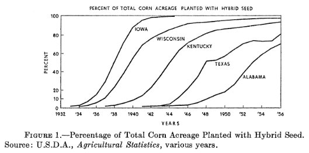
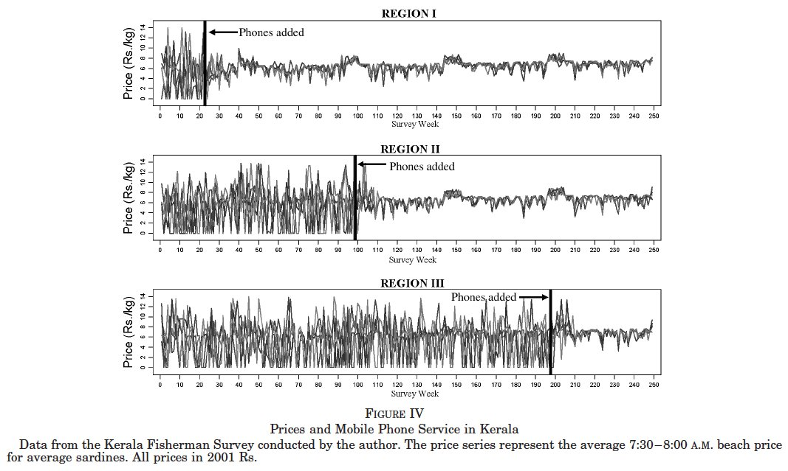
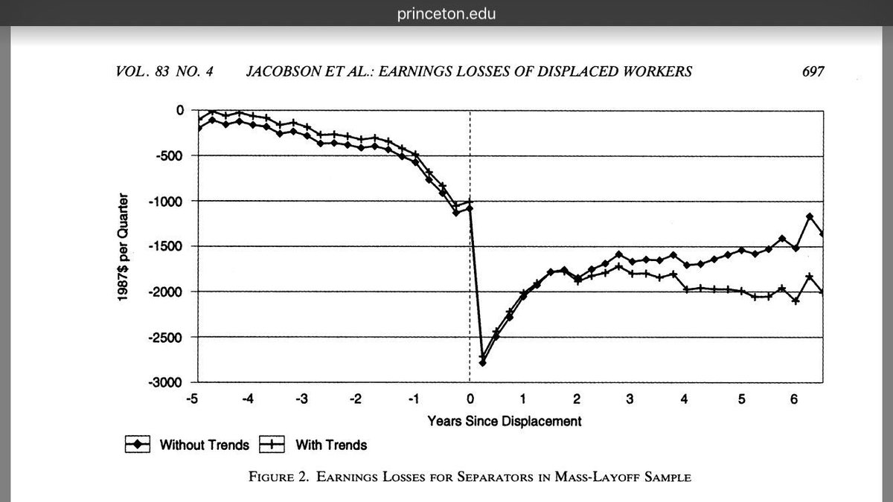
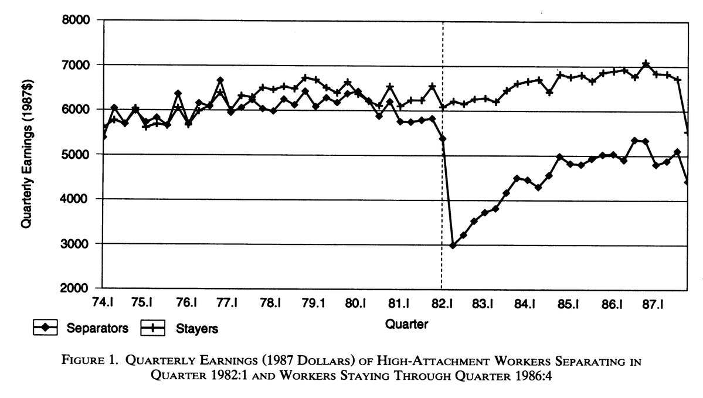
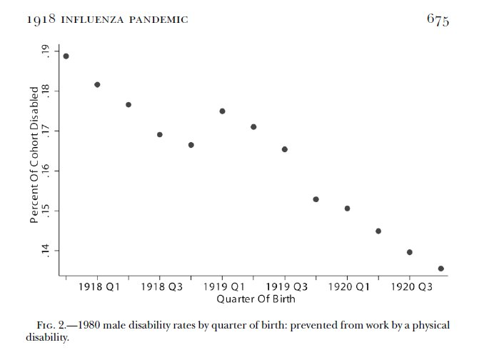
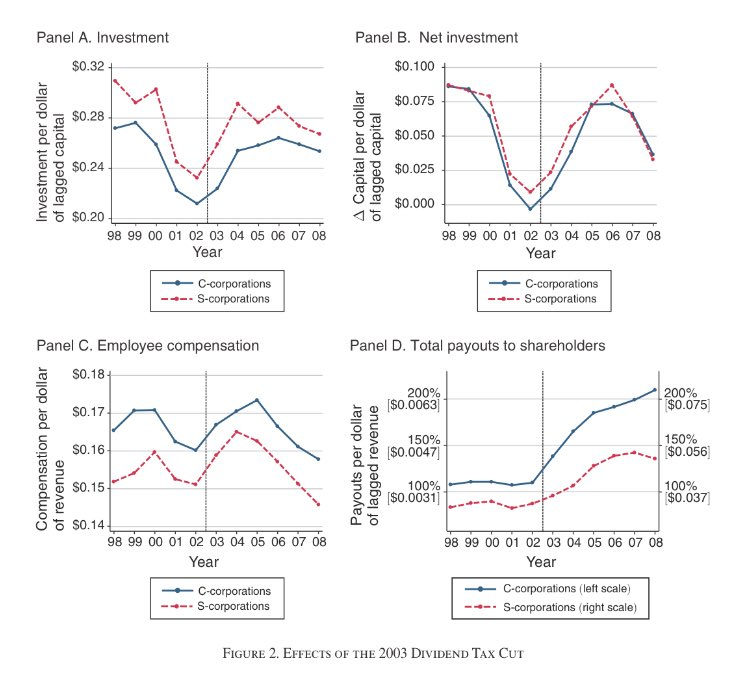
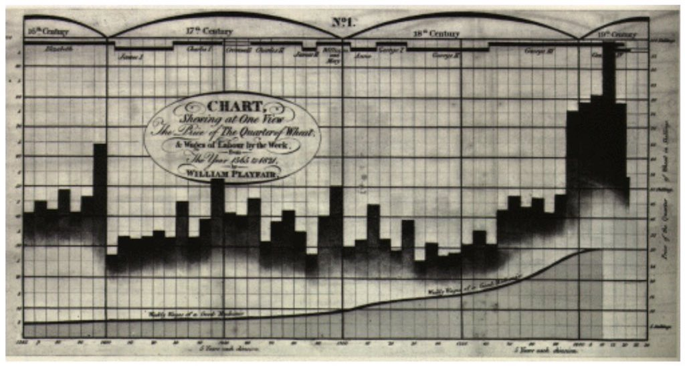
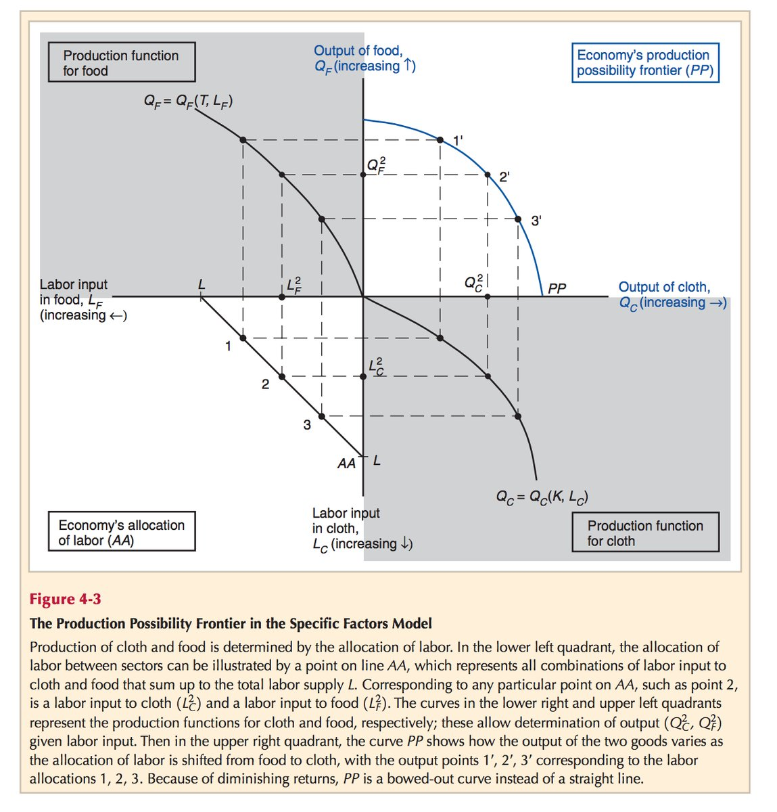
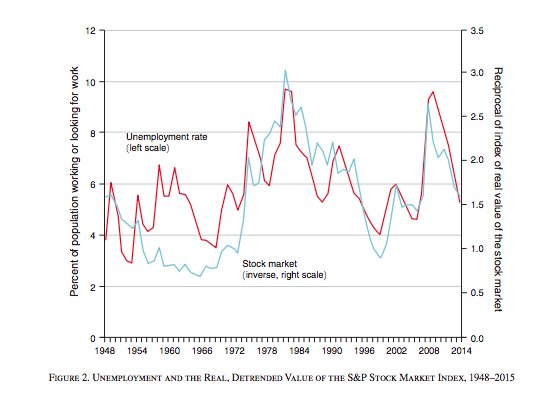

Griliches (1957) 
Jensen (2007) 
Jacobson, Lalonde, Sullivan (1993), nominated twice!  
Almond (2006) 

Yagan (2015) 
Playfair (1821) 
Krugman and Obstfeld Textbook 
Hall (2017) 
DC students who live in Ward 7 commute to middle schools all over the city. Read the full story (https://t.co/jGudS5dqFY) and 5-city empirical study (https://t.co/vDVdZXaYZQ). pic.twitter.com/TCYTaz7DiU
— Matt Chingos (@chingos) March 14, 2018